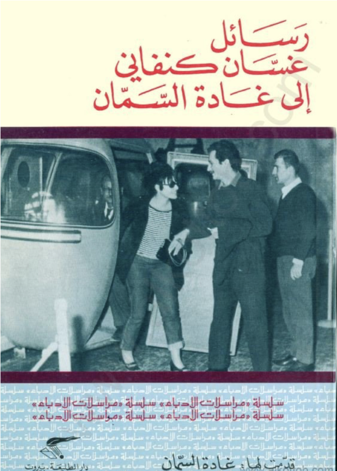

Letters between Ghassan Kanafani and Ghada al-Samman
This is a translation of one of the letters that Palestinian author and freedom fighter, Ghassan Kanafani (1936-1972), exchanged with Ghada al-Samman (al-Samman would later publish these letters under, 'Ghassan al-Kanafani's Letters to Ghada al-Samman, 1992 ).
The letter was originally addressed to Kanafani's sister Fayzah, but Kanafani meant it for Ghada.
27-Dec-1966
my dear Fayza,
I disappear for a few of years, but I come back, spring suddenly, and you tell yourself: there goes the child, returning again. You used to get angry and sad and say you miss me but you finally surrendered to that eternally strange child, always consigned to his fate, always seeking shelter.. you can now, after thirty years, be certain about one thing: that I will always come back. It looks as if I am destined to be resoundingly defeated, what was broken in me when I was ten won't heal. I was always the faithful companion to something called misery and misfortune. And here I am, I return back to you, perhaps because you are far away from me or [that you are] the island that is no longer mine, and because you can't take me with you, around you and to you..
What happened in the long years that have passed? What happened exactly, since I barged into the operations room? Do you remember? When I raised the scalpel in the face of poor Wilson, this kind Scotsman, who found in me what I could not find in myself. I am sure he laughs when he remembers that story. I was right in spite of everything, and I said to him: 'let the child die, but if she dies, you die with her here'. I refused to leave, I remained like a crazy rat, fixing my back to a corner, looking at you, awash in blood under his cold fingers and when he exhaled in relief after a century of horror I started crying. The scalpel fell from my hand.. and I didn't see till Osama was four years old..
Why do I remind you with this incident that is long gone? Maybe because I feel how much you were right.. Man is nothing but the inventor of shelter, this is what he was, this is what he is and this is what he will be. Everything else is rubbish and nothing but rubbish. And I say that now: I felt my shelter deep in this instinct, you used to call 'prophecy' when I was a child. And I used to feel how the loss of this shelter, was a horror where the desire to live was equal to the blade of the scalpel. I can't forget doctor Wilson's eyes, where these two blue circles swam, he was a man able to understand as a result of witnessing people simply dying, leaving the world behind with less shelters. He knew you were my shelter.
And here I return Fayza, like I used to return to you a wretched child, wet with Jaffa's abundant rain and you can tell me with the same old voice:"You were walking under the gutters, I know how naughty you can get". Under the gutters Fayza, under the gutters.. I give you my head, after twenty years to dry once again, although I feel wet on the inside, I give you my head, me the poor, wretched boy, nothing remains but your hands. Precisely because they are a thousand miles away.
What happened after Osama was born, after this terrible, difficult birth? To me the two white sliding doors remain rocking back and forth since I left through them.. Did anything change? What madness fills this world? Did you see doctor Wilson and did you talk about my madness? Does Osama know me? Does he hear about me every once in a while? As for me, something happened to me, what you told me once will be the only thing that destroys me one day: Love.
If you were here, and sitting with us like you used to do long time ago, you would have looked at me, in a fleeting gaze and nod your head in agreement. I have lived my life waiting to see that nod from you. When we sat with Jacqueline in Bhamdoun seven years ago, you seized the first chance and raised your eyebrows as if telling me "no, not her", and Jacqueline is gone, and Mona is gone and Kawkab is gone through your eyebrows who always say "no".. And then she came, tell me its her.
This is the thing you have been waiting for, Fayza, behind my back, without me knowing. This thing which alone can destroy me. You were honest and how stupid I was. Do you remember the day when I came to you to tell you that my life is over? You told me at breakfast: 'that all your ferocity is only a front to hide fragility, unbounded fragility, which someday a woman's fingers will reach and crush. And if you come that day to me, I alone can explain!'
And here I come, reward me then by explaining, you can never give someone advice, I am being torn apart and you can't find, yet, one ear in that body that is all ears. We always come too late. Too late. Too late. Do you understand everything now Fayza? Too late.
I stand on a cliff, over looking my life, seeing it arid, filled with thorns, and loneliness as it expands in the coldness of the past and the coldness of the future, with no end. It seems to me that I am trying to replace 'homeland' with 'woman'. Have you ever heard of a more terrible deal or a more impossible one? But this is what is happening and I can reveal it very clearly now, as if everything that happened did nothing but to lead me blindly to this end. I have tried since the beginning to replace 'homeland' with work, then family, then words, then violence, then 'woman', but I always lacked true belonging. That belonging that calls to us when we wake up in the morning, "You have something in this world, so rise", do you know it? Self-deception was falling apart, I wanted a solid ground to stand on. And we can deceive everything but our feet. We can never convince them to stand on fragile ice sheets suspended in the air. And now: I used to walk on this drift ice, and everything that I wrote and everything that I said in my entire life was nothing but the sound of it being crushed under these fugitive steps.
Once again, what happened? I got married suddenly, and you didn't know of course. The news surprised you as it surprised my father, but he couldn't do anything about it. He couldn't disinherit me, after he was stripped of his fortune, and he couldn't forbid me from his house, after I refrained of going there myself, and he couldn't summon the wrath of heaven upon me, for I have enough of its wrath that exceeds one man's need. He also doesn't know why and how, but I knew. I was practicing this one true human virtue: I was inventing a shelter.
Annie came as I was starting, by choice or by force, to slip off the seductive, attractive, mucky cliff. On the morning, which I decided that later in the evening, I would marry her I was about to agree to live together with a woman that was half-rich, half-beautiful, half-young and half-loves me. This woman was half-way down to my fall and I wanted to make her my station so that I accept the journey, all of it down to the deep, forgotten abyss. Annie came that day, an annunciation from a far, unknown place, so I made her my shelter from running away, in one of those flashes of prophecy that spark in the conscience of every human on this earth. I tell you know: She was an escape.
She was far from me in everything. I needed five long years to fill the open chasm between us and committed the mistake of deception once again: When I failed to fill it as I should have, I filled it with two children.
But in spite of everything I remained loyal to the values that I respect that I inherited from my aristocratic grandfather, who believed in virtues when he lost his land but insisted on winning his values. I knew deep from within that the folded sail in my depth will fill up with the winds of alienation again but I remained resolute. And with the cruelty of a knife, I gave up my former life for her sake, she was and still is a wonderful woman. Maybe the only thing in this universe that I can, with unqualified acceptance, give up my life for if she's ever threatened with absence.
I tell you this now, although you asked me once when we were alone: "Are you happy with her?" And I told you honestly and firmly: "No. Love is something and my relationship with her, is something else." And she knows.
And then came Ghada.
Came? No, the more precise word is: returned. She was always there deep inside. I am not talking about the time that I used to see her passing by in the halls of university ten years ago. No. I am talking about an existence much more complex than that, much more deep. What can I tell you and how can I explain things to you? Let me tell you how: Yesterday I was melting a candle on top of a bottle, I was distracting myself with this game, where a person creates something chaotic and mysterious from a bottle and a candle. The melted wax covered almost the entire body of the bottle, and all of sudden a drop of molten wax fell, without me interfering, and rolled madly over the hills of frozen wax on the body of the bottle and settled in a gap that I haven't noticed before, and it froze there making the whole of the wax hold itself together by itself.
This is what happened. And I can't find any other description for it. Since I met her the first time, I knew deep inside all that was going to happen, at least from my side. And in spite of this I was like someone who entered a field of quick sand, not knowing whether to back away or to go forward.
I am now seven months old and you wouldn't believe how much I have changed. I myself couldn't and can't believe. There seems to be men who can only be killed from the inside.
She has been tortured by many in her life and she is alone, she cannot fill that chasm between herself and the world except with men (In reality I don't believe that. But a voice inside told me that a week ago) didn't I fill that chasm with two children!
Lets try one more time: She loves me and she's afraid that if she pushes herself towards me, I will leave her as it happens in most silly relationships between people. And she is afraid that if we went ahead with the relationship to its natural conclusion that we would lose each other. But Fayza these are the words of books, doctors, math teachers and not the emotions of a woman in front of man who loves her and whom she loves.
Lets try a third time: She loves me to the extent that she doesn't want to constrain my life. But who told her that her escape won't?
Fayza, I trust her intelligence, maybe too much. And interpret her words like a researcher in a lab does. It appears to me sometimes that she tries to humiliate me in front of people. This doesn't anger me (yes I have reached that point!) but why? What would push someone to tear apart someone else that they love, with such ferocity? Yesterday she told me in front of a friend: "That no other man would enter my house but him, because he's a brother" (she was talking about the friend). Why? What is this terrible thing that would push a woman to say such words to the man she loves in front of his friend?
I don't know Fayza. But day and night, a moment after the other, I think about all of this and I live and suffer in it and for it.. Sometimes I look into her eyes and tell myself: "You should hate this woman that enjoys humiliating you like this". But I can't. Before, I could reach such a decision in a moment, when I would tell myself that.. but now, you have no idea of the extent of my misery!
The world is strange, and so is fate. A savage hand, mixed things in heaven in a terrible mix, and made the end the beginning and the beginning the end.. But tell me: What deserves to be lost in this fleeting life? You know what I mean. In the end we are going to die.
I didn't write to you all of this to ask for advice. I can now lecture about this. And I can't claim to know how things will end but one day I will be able to tell myself while saying goodbye to her at her door, without her allowing me to get close to her: "She's dead". And at the moment, I will cry and I might do something foolish and will be broken for a month or two and my heart will pound, the same way one's heart pounds when they see a ghost, every time I read about her or see her or hear her news. I tell you whats even worse: I might slip and break but I will never ever accept to be a friend of hers, seeing with my broken eyes a man showing how he loves her and how she loves him. I will never tolerate this rubbish. I would.. like I told you once--- rather die than be captured. No one can love her like I did. At the very least and for the sake of truth I will refuse deceit.
... days turn my dear, they turn and turn like my head right now. And beneath their petty dust one hopes to forget. Do you remember that day when my poor father told us how he stuffed the wound of his friend with spider cobwebs that he collected from the holes of the wall of Acre? He told us that day that the cobwebs stopped the bleeding.. God how he could see the unknown!
Maybe one day you will hear how I stopped loving her, and I tell you now: "don't believe". I love her in a way that can never fade. I wrote to her what I never wrote in my life. And with her and for her, I challenged the world and everyone and myself and overcame them all. A love on that level, a woman doesn't accept. But unfortunately a man can carry this, knowing this truth. No escape and no refuge this time, so lets contemplate the effect of the cobwebs.
You ask: What do you want then? And I don't know. All that I know is that I want her. I can't understand how a woman rejects a man she loves. To a great extent, their relationship becomes something, and if I am able to make a terrible decision like the one I made two months ago, how can you expect me to explain things? Although sex is not a first priority but its there. Oh my dear! Its not easy for me to enter into a sexual relationship with her, even there is a chance. I remember..... then what do I want?
I don't know my dear, I don't know.. Life is too complicated for people who live forty years at most, and what I feel right now is that we are wasting our lives for nothing.. My manhood was never humiliated in its entire existence like it is humiliated every night I tell her: sleep well.. then I give her my back and go on as if I was a block of wood, devoid of nerves, and that wound of this wasted manhood when I hear the door closing behind me: It doesn't concern her.
What do I do? Try to tell me, although I will not heed what you say but maybe this will help in reaching something.. We are superficial when the decision concerns us. Sometimes I think of joining the fedayeen maybe I will die an honorable death at least. Sometimes I think of going somewhere unknown: I change my name and work and live until I die quietly, unknown.. Sometimes I think of breaking into her house and staying there. But of all of that -I ask you- what good does it do? Do you think I am trying to look for an escape from myself? No. From her? No. Then what do I want? I want her. But how? How? Where is the magical tile in this universe where we can put our feet on together?
The only thing I ever wanted in my life, I cannot have. I have come to realize that my entire life was a series of rejections and that's why I was able to live. I refused school, refused family, refused fortune, refused submission, refused accepting things but I never wanted anything in specific. And when I want her she slips through my fingers (and the fingers of fate, things and the world, I understand that), like water slips through a sieve!
When I think for her, it is as follows: ours is a losing battle, then lets work on winning it till the moment comes. Time is against us, then lets use it as long its on our side. If meeting is impossible then lets meet when that is possible. We will lose everything then lets win time so that we don't regret. Tears are coming.
I know she loves me, not as I love her, but she loves me. She always says that she's against me if I objectify her but she never stops objectifying me without her knowing so. She escapes from me at a time when I don't stop going towards her. She -despite everything she says- prefers superficiality and feelings that remain at the surface and I know that life has bruised her enough so she refuses more scratches but why do I have to pay the price? She's a beautiful woman -you can see that in her photos- but she's more beautiful in real life than in her photos. Maybe her role in my misery and defeat is that she's irresistibly desired and that is something she can't do anything about but I also can do nothing about. She is intelligent and sensitive and she understands me and this pulls me towards her in the same way it drives me away from her. She knows better than me the nature of the quick sand that we drowned in without us knowing. I tell you in short, that she is a coward, she wants things by half measure, doesn't want me and doesn't want my absence. And the moment that I arrived to full belonging to her that I was looking for all my life, she stands in the middle of the road.
I pay for her the price of other people's frivolousness. Yesterday she shocked me, for example, when I told her I want to see her, she yelled: "Do you think I am streetwalker?" She was answering someone else and I knew that, but why is it my fault?
I am being torn apart like I never was before in my life, nothing could have shaken me so mercilessly as this woman. I love her and desire her and for that I have committed another foolish thing that was out of my hand: Fayza I have no sexual relations with anyone, do you understand? I am a man whose tragedy is this inhuman match between my body and my mind, this is what Dr. Wilson told me one day: "This is why you are diabetic my dear!"
But be careful not to think this is the problem. No. I am not that young and sex is no longer to me the end of the world. What is my problem then? I don't know. But I want her. This is impossible, as you might say, and I know but this is the story.
Lets try and discover things simply: Lets say she's a woman who enjoys torturing me, so lets rejoice [in that] now, and separation is inevitable, so lets meet awaiting its coming.
Or lets sever everything now. This moment, in a clean, noble, final cut.
But the middle ground? The middle ground, Fayza, which you know your brother cannot [reach], how miserable is your doomed brother.. Sisyphus forgot his case, a victim of habit. As for me I am one stone, I carry it once, and I return with it, once!
How is Osama? Teach him that deceit is the most decisive passport, and that the world is rubbish where the winner is whoever can slide on its surface. Don't ever ever tell him the story of his uncle, who one day wanted to create life with a surgeon's scalpel.. Life is less complicated and should be simpler. Life is like an ice plateau, no one can walk on it, if they want to root themselves in it. Sliding is the solution and its ideal deception.. Teach him not to wait thirty years to commit the mistakes of his miserable uncle and not to expect anything.
Don't write me a letter, don't bother and don't say anything. I return to you like an orphan to his only shelter and will continue to return: give you my wet head to dry, after the wretched chose to walk under the gutters!
28-Dec-1966
The sun will rise in a little while and just now I received a phone call from her.. I was waiting for her all night and I knew that if I wanted to find her, I would find her but without me even wanting to, I wanted to see how much she cares. No news, no sign. Nothing. She told me in the morning that she will go to bed at ten and that's "go back home early today".. but she wasn't there, till midnight, not at one, not at two, not at three.. then I phoned her and she told me she was drinking wine and had a friend over.. and she asked me: "Why were you late?"
She thought I was phoning her from home, but I wasn't there. I was one scream away from her. I asked at home if someone called, and was told that the phone rang once or twice with no answer, so I phoned her. And this -Fayza- is what she wanted to say! Can you imagine? She was trying to get my ears, to pour this curse in them.. What reminds this person of me, but humiliation?
What happened that night? I am mad. This is a real thing: When I wrote to you the former pages, I was, also, a few steps away from her, in a neighboring coffeehouse, and my car next to hers. And as it so happens, and as I expected, she didn't care. She left. And I was drinking a glass with each page until it was night and the alcohol ravaged my shoulder and I couldn't move my arm and I drove my car in the rain, the dusk, and in astonishment, with a sense of peace I never had in my life. I decided not to see anyone.. I didn't think about death, I thought only about misery and I knew I will be miserable for a long time. I love her, and this is something that I cannot deny or forget or forgive myself for. And when my fingers touched her body one night, I had a terrible feeling, that really scared me, that I never touched a woman before.
Here I am, broken, stabbed, far away from everything. Tomorrow will not be another day. And I know I need to be completely alone, maybe for three months, continue to write to you on these pages, day after day, so you can you see with your eyes the story of a man ending, or beginning or slipping or becoming alienated or dying by coincidence after all of this.
What remains for me to be done my dear? What remains? After a little while, I will drink another coffee, and I need a glass of milk so my chest is still able to breath.. and I will walk but I will not see anyone.. And I will put myself in a place more far and remote so not to hear her voice and lower than anything so not to be able to see her or talk to her.
I sit in the sun now and write. I passed by her house dozens of times and I saw her car and I stood on the border of the Raouché watching people and children and the waves. I almost fell asleep on the fence. For the first time in years, I forget the damned needle and food.. I wonder if she asked about me? This won't be unless she wants to see me suffering or to advise me with this silly advice: "go home early".. or to tell me: "Why are you jealous?" She's far from the truth, far, so far..
She'll find one thousand excuses to appease this little, acquiescent, stupid child. And as usual I will not be able to tell her: No, and yesterday night what happened? What but the fact that she is proud that she is capable of going out with another young man or with herself while I wait?
What do I want.. What do I want from everything, Fayza? What does this spoiled, lost, stupid child want, that child who turned into an entangled ball of nerves and wounds.
Notes:
1. I hope that Jacqueline, Mona and Kawkab did not destroy Ghassan's letters, if he wrote to them one day, because these lines are no longer personal letters concerned with with their history but rather they concern history of literature.
2. First time we met was at Damascus university, in front of the door of the oral examination hall. I haven't heard of him, literary wise, before. After university we didn't meet for four years till we met by coincidence in the "al-Muharir" newspaper in Beirut. Ghassan insisted that we delete those years from his life and mine.
3. This line is struck out by Ghassan himself. The letter was like this when I received it. I tried many time to read it but failed!